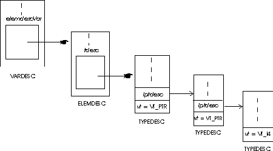

[uuid(12345678-9012-3456-7890-123456789012)]
library zzz
{
importlib("stdole.tlb");
[uuid(23456789-0123-4567-8901-234567890123)]
dispinterface www
{
properties:
[id(1)] long j;
methods:
[id(2)] void aa();
[id(3)] long bb(short a, BSTR b);
};
[uuid(34567890-1234-5678-9012-345678901234)]
dispinterface xxx
{
properties:
methods:
[id(10)] void Click();
};
[uuid(45678901-2345-6789-0123-456789012345)]
coclass yyy
{
[default] dispinterface www;
[default,source] dispinterface xxx;
};
};
Every distinct entity in the ODL file is assigned it's own unique identification number. This identifier or uuid is nothing but a GUID structure. (What's in a name?). The very first uuid that we encounter in the ODL file is that of the type library itself. Just like every interface, each type library is also registered with `reg.dat'. It is this uuid that we use to access the type library.
dispinterface NameOfInterface
{
properties:
.
. // List Of Properties;
.
methods:
.
. // List Of Methods;
.
};
Each property is listed in the format:
[id(IDOfProperty)] TypeOfProperty NameOfProperty;
while each method is listed in the format:
[id(IDOfMethod)] ReturnType NameOfMethod(Param 1,..., Param n);
Every element of an OCX that can be accessed by others is assigned an unique ID. This is true irrespective of whether we are talking of events, methods or properties. It is using this ID that we access the members rather than their names. We will get into the specifics of accessing them later in this newsletter. First, let us read a type library.
void MFrameWnd::ObjCreate(CLSID z_TempClsid)
{
// Retain all previously existing code
InitArray();
}
void MFrameWnd::InitArray()
{
IProvideClassInfo *z_pProvideClassInfo = 0;
ITypeLib *z_pTypeLib = 0;
ITypeInfo *z_pTypeInfo = 0;
VARDESC *z_pVarDesc = 0;
FUNCDESC *z_pFuncDesc = 0;
UINT z_nIndex = 0;
TYPEATTR *z_pTypeAttr = 0;
z_pOleObject-> QueryInterface(IID_IProvideClassInfo,(void**)& z_pProvideClassInfo);
z_pProvideClassInfo-> GetClassInfo(& z_pTypeInfo);
z_pTypeInfo-> GetContainingTypeLib(& z_pTypeLib,& z_nIndex);
for(UINT z_nTypeCount = 0; z_nTypeCount < 2; z_nTypeCount++)
{
PData *z_pPDPrev = 0;
FData *z_pFDPrev = 0;
z_pTypeLib-> GetTypeInfo(z_nTypeCount,& z_pTypeInfo);
z_pTypeInfo-> GetTypeAttr(& z_pTypeAttr);
// if it is the Events dispinterface store the CLSID. It is required later.
if(z_nTypeCount)
z_ClsidEvents = z_pTypeAttr-> guid;
// Initialization of the link-list that holds information on properties
if(!z_nTypeCount)
{
for(UINT z_nVars = 0; z_nVars < z_pTypeAttr-> cVars; z_nVars++)
{
VARTYPE z_vt;
UINT z_nCopied;
if(!z_pPDPrev)
{
z_pPDPrev = new PData;
z_pPDFirst = z_pPDPrev;
}
else
{
PData *z_pNext;
z_pNext = new PData;
z_pPDPrev-> z_pNext = z_pNext;
z_pPDPrev = z_pNext;
}
z_pPDPrev-> z_pNext = 0;
z_pPDPrev-> z_nPtr = FALSE;
z_pTypeInfo-> GetVarDesc(z_nVars,& z_pVarDesc);
if(z_pVarDesc-> elemdescVar.tdesc.vt> 13)
z_vt = z_pVarDesc-> elemdescVar.tdesc.vt -2;
else
z_vt = z_pVarDesc-> elemdescVar.tdesc.vt ;
z_pPDPrev-> z_nPropType = z_vt;
if(!strcmp(z_VarType[z_pPDPrev-> z_nPropType],"VT_USERDEFINED"))
{
UserDefined(z_pTypeInfo, & z_pVarDesc-> elemdescVar.tdesc,& z_vt);
z_pPDPrev-> z_nPropType = z_vt;
}
else if(!strcmp(z_VarType[z_pPDPrev-> z_nPropType],"VT_PTR"))
{
z_pPDPrev-> z_nPtr = TRUE;
Ptr(z_pTypeInfo,& z_pVarDesc-> elemdescVar.tdesc,& z_vt);
z_pPDPrev-> z_nPropType = z_vt;
}
z_pPDPrev-> z_lDispID = z_pVarDesc-> memid;
char *z_sPName = (char*) malloc(25);
z_pTypeInfo-> GetNames(z_pVarDesc-> memid,& z_sPName,
1,& z_nCopied);
z_pPDPrev-> z_sPropName = (char*) malloc(strlen(z_sPName) + 1);
strcpy(z_pPDPrev-> z_sPropName,z_sPName);
if(z_pVarDesc)
z_pTypeInfo-> ReleaseVarDesc(z_pVarDesc);
free(z_sPName);
}
}
// Initialization of the link-list that holds information on methods or events
for(UINT z_nFuncs = 0;z_nFuncs < z_pTypeAttr-> cFuncs;z_nFuncs++)
{
char **z_sNames;
UINT z_nCopied;
VARTYPE z_vt;
if(!z_pFDPrev)
{
z_pFDPrev = new FData;
if(!z_nTypeCount)
z_pFDFirst = z_pFDPrev;
else
z_pEDFirst = z_pFDPrev;
}
else
{
FData *z_pFDNext;
z_pFDNext = new FData;
z_pFDPrev-> z_pNext = z_pFDNext;
z_pFDPrev = z_pFDNext;
}
z_pFDPrev-> z_nPtr = FALSE;
z_pFDPrev-> z_pNext = 0;
z_pTypeInfo-> GetFuncDesc(z_nFuncs,& z_pFuncDesc);
z_sNames = (char**) malloc((z_pFuncDesc-> cParams + 1) * sizeof(char*));
z_pTypeInfo-> GetNames(z_pFuncDesc-> memid,z_sNames,
(z_pFuncDesc-> cParams + 1),& z_nCopied);
if(z_pFuncDesc-> elemdescFunc.tdesc.vt > 13)
z_vt = z_pFuncDesc-> elemdescFunc.tdesc.vt - 2;
else
z_vt = z_pFuncDesc-> elemdescFunc.tdesc.vt;
if(!strcmp(z_VarType[z_vt],"VT_PTR"))
{
z_pFDPrev-> z_nPtr = TRUE;
Ptr(z_pTypeInfo,& z_pFuncDesc-> elemdescFunc.tdesc,& z_vt);
}
z_pFDPrev-> z_nRType = z_vt;
z_pFDPrev-> z_lDispID = z_pFuncDesc-> memid;
z_pFDPrev-> z_nNumParams = z_pFuncDesc-> cParams ;
z_pFDPrev-> z_sFName = (char*) malloc(strlen(z_sNames[0]) + 1);
strcpy(z_pFDPrev-> z_sFName,z_sNames[0]);
if(z_pFuncDesc-> cParams )
{
z_pFDPrev-> z_pPTypes = (VARTYPE*) malloc(z_pFuncDesc-> cParams * sizeof(VARTYPE));
z_pFDPrev-> z_sPName = (char**) malloc(sizeof(char*) * z_pFuncDesc->
cParams);
for(int z_nParms = 0; z_nParms < z_pFuncDesc-> cParams ; z_nParms++)
{
z_pFDPrev-> z_sPName[z_nParms] = (char*) malloc(strlen(z_sNames[z_nParms+1]) + 1);
strcpy(z_pFDPrev-> z_sPName[z_nParms],z_sNames[z_nParms +1]);
z_pFDPrev-> z_pPTypes[z_nParms] = z_pFuncDesc-> lprgelemdescParam[z_nParms].tdesc.vt;
}
}
free(z_sNames);
if(z_pFuncDesc)
z_pTypeInfo-> ReleaseFuncDesc(z_pFuncDesc);
}
if(z_pTypeAttr)
z_pTypeInfo-> ReleaseTypeAttr(z_pTypeAttr);
}
if(z_pProvideClassInfo)
z_pProvideClassInfo-> Release();
if(z_pTypeLib)
z_pTypeLib-> Release();
if(z_pTypeInfo)
z_pTypeInfo-> Release();
}
void MFrameWnd::UserDefined(ITypeInfo *z_pTInfo,TYPEDESC * z_pTDesc,VARTYPE* z_nVt)
{
ITypeInfo *z_pRefTypeInfo;
TYPEATTR *z_pRefTypeAttr;
z_pTInfo-> GetRefTypeInfo(z_pTDesc-> hreftype,& z_pRefTypeInfo);
z_pRefTypeInfo-> GetTypeAttr(& z_pRefTypeAttr);
if(z_pRefTypeAttr-> typekind == TKIND_ALIAS)
{
if(z_pRefTypeAttr-> tdescAlias.vt > 13)
*z_nVt = z_pRefTypeAttr-> tdescAlias.vt -2;
else
*z_nVt = z_pRefTypeAttr-> tdescAlias.vt;
if(!strcmp(z_VarType[*z_nVt],"VT_USERDEFINED"))
UserDefined(z_pRefTypeInfo,& z_pRefTypeAttr-> tdescAlias,z_nVt);
}
if(z_pRefTypeInfo)
z_pRefTypeInfo-> ReleaseTypeAttr(z_pRefTypeAttr);
}
void MFrameWnd::Ptr(ITypeInfo *z_pTInfo,TYPEDESC *z_pTDesc, VARTYPE *z_nVt)
{
if(z_pTDesc-> lptdesc-> vt > 13)
*z_nVt = z_pTDesc-> lptdesc-> vt - 2;
else
*z_nVt = z_pTDesc-> lptdesc-> vt;
if(!strcmp(z_VarType[*z_nVt],"VT_USERDEFINED"))
UserDefined(z_pTInfo,z_pTDesc-> lptdesc,z_nVt);
}
The standard interface ITypeLib is a collection of functions which enable us to read data from the type library. So, we need to obtain a pointer to an ITypeLib interface. [id(10)] int h [id(15)] long* i; [id(20)] int j[10][12]; [id(25)] OLE_COLOR k;
The function GetVarDesc() will return a VARDESC structure for this variable when it's first parameter is 0. The member memid of the VARDESC structure will be 10. This is the ID of the integer variable h as seen from the above example. The ELEMDESC structure within VARDESC is known by the name elemdescVar. Accessing this ELEMDESC structure is the next step in determining the data type of a variable. The actual information is contained in tdesc; the TYPEDESC structure within the ELEMDESC structure. The TYPEDESC structure has a variable vt that holds the data type.
If z_pVarDesc is our pointer to a VARDESC structure, then the above explanation can be represented by the code `z_pVarDesc-> elemdescVar.tdesc.vt'.The acceptable data types are stored in the enum VARENUM. The variable vt is assigned the appropriate member of the enum. For an integer variable; vt will be equal to VT_I2. A listing of VARENUM can be had from variant.h.
The ELEMDESC within the VARDESC structure is accessed. Using the ELEMDESC structure of the VARDESC, we gain access to the TYPEDESC structure. The member variable vt of TYPEDESC returns VT_PTR. This just indicates that the variable is a pointer. We have to know what is it that it points to.
Within the TYPEDESC structure is a union. One of the members of the union; lptdesc; is a pointer to yet another TYPEDESC structure. It is this TYPEDESC structure that will hold the data type of the pointer. Thus, we use the TYPEDESC pointer to access the second TYPEDESC structure. The variable vt in the second TYPEDESC structure returns the actual data type of the pointer. `z_pVarDesc-> elemdesc.tdesc.lptdesc-> vt' is the code equivalent of the above explanation.
In our case, the property was a pointer to a long. Hence, vt is equal to VT_I4.
What if the line had read `[id(15)] long** j', instead? In such a case, the member vt of the second TYPEDESC structure will also read VT_PTR. We then use the TYPEDESC pointer within it to access a third TYPEDESC structure. The variable vt of the third structure will return the data type of the variable; in this case; VT_I4. `z_pVarDesc-> elemdesc.tdesc.lptdesc-> lptdesc-> vt' would be the code.
.
Thus, if we have a a variable long*** j; then a fourth TYPEDESC structure is to be accessed and so on. In practice, we use a recursive function to deal with such situations.
Within the ARRAYDESC structure is an array of SAFEARRAYBOUND structures. There is one SAFEARRAYBOUND structure dedicated to each dimension of the array variable. The size of the dimension is stored in the element cElements of the corresponding SAFEARRAYBOUND structure.